Getting Started
Creating a program
The different tabs represent different types of blocks which can be seen when you click on the tabs.

If you click on Motion for example, you will see blocks that can make the robot move,
such as forward, backward and turn.
To create a program, you simply click on a block and drag it to the workspace, where you then drop it.
Usually you will begin with a When clicked block. This will mark the beginning of your program and tell the PedaGogo when to start executing your program, which means it will start to do the things your program tells it to when you click on the button with the same colour. There are three buttons to chose from; green, blue and yellow.
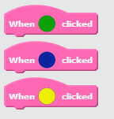You may have seen that there is also a red button on the PedaGogo, this button will be explained later on.
You can tell by the shapes of the blocks how they fit together. By dragging the blocks inside or underneath other
blocks, they will snap into place automatically.
Loops
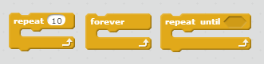The orange blocks that you see above are called loops. You can use these to repeat parts of, or all of, your program. If you want to, for example, spin round four times, you can put the repeat block around the turn block and change the repeat-value to 4.
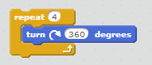To change the values in the blocks, double click on them and type in a new value!
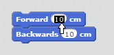The forever block will repeat (loop) the blocks placed inside forever, or until you end the program. The repeat until block has an empty space shaped like a diamond. You can find the blocks that fit in here under the tab called Operators.
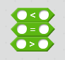To use these, you need to know more about variables.
Variables
Variables are used to store information, for example they can be used as counters. This can be used in loops: instead of changing the value in a repeat block, you could use a repeat until block like in the picture below.
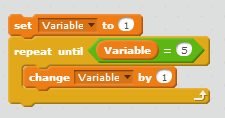There are no variables when you begin your program, you need to make them. To do this, click on the Data tab and then on the Make a Variable button.

You will then be asked to give your variable a name. Try to think of good names for your variables so that you remember what they are for. For example NbrOfSpins or TimesLeft. Once you have created your variable, you will get some new blocks to use.
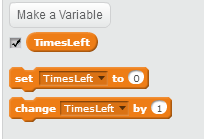With the set block you decide the starting value of your variable. If you want to count upwards for example, you can start on 0, if you're counting down, then set your variable to the highest value you want to use. With the change-by block you decide by how much you want your variable to change each time. For instance if you are counting then you should set this value to 1.
Variables are also used for conditionals which are explained below.
Conditionals
A condition is when you say If this happens, do that. So for example, you can use variables to say if speed reaches max speed, then decrease the speed. This is done using orange blocks in the Control tab that begin with if. An example is shown below.

This means that if the value of the variable, which in this case may be a speed, is bigger than 10, then decrease speed by 2.
There is also an if-then-else block which means that if the variable, in the example above, is not bigger than 10, then you can tell it to do something else. Below, it is now telling the robot to increase the speed by two if the variable is less than 10.
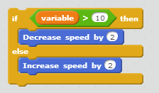Lists
Lists are used to keep variables or values in a specific order. You can add and delete things from a list but also replace items in the list with other values or variables. You can also check whether a list contains a certain value or not.
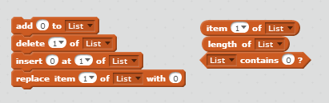As with variables, there are no ready lists to use, you need to make your own. In the tab called Data, click on the Make a List button and choose a name for your list.
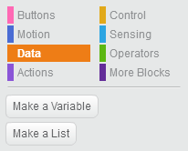You can then start adding values or variables to your list using the add block, which adds your values last in your list. You can also use the insert-at-of block by saying where in the list you want to add your value.
You can see an example of how to use a list below.
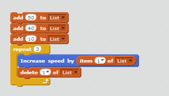This program will add the values 50, 40 and 10 to the list called List in that order. It will then increase the speed by the first value in the list, and then delete this value so that in the next loop, the first value in the list is now 40. It will do this 3 times so that the last increase in speed will be by 10, then the list will be empty.
Uploading your program to PedaGogo
You will need a flashdrive with USB blablablablabladibla red button bladibladiblaa.
Motion
Practise makes perfect! Read about Direction and Speed to complete the following tasks.
Direction and Speed
The speed can be changed by changing the values in the speed blocks. Changing the value by 1 means.. Blablabla. Max speed is.. Min speed is.. jadajadajada!

To tell the robot to make a turn, you use the turn blocks to turn either left or right. You can decide how many degrees the robot should turn by changing the value in the blocks. Here are some values of degrees you could use.
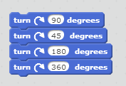Below are some examples of how the robot turns depending on the degree-value

If you need the robot to turn around at a specific angle, like when you want it to move in a triangle, remember to calculate the correct angle for the turn-block as follows:

You can practise your skillzzz by completing the following tasks! Enjoooy!
Task 1: Speed
1. Try changing the speeds from the minimum speed to the maximum by using the increase speed block, try some different values in the increase block to see the difference.
2. This time, try using a loop to gradually increase the speed up to the maximum speed, then use another loop to decrease the speed down to the minimum speed.
Remember: the max speed is 255 (?) and the minimum speed is ??.
Task 2: Shapes
1.Use the turn-blocks to make the robot drive in a square shape and then try a circle.
Try to use loops to do this.
Hint: A circle is like a square, but with many more corners.

2.This time try to use the turn-blocks to make the robot drive in a triangle. The angles should all be the same size. Then try again with different sizes for the angles.
Remember: how to calculate the angles.
Task 3: ZigZag
1.Use what you have learned about angles to write a program that will tell the robot to drive forward in a zigzag motion. Don't forget to use a loop if you can!

2. This time try to make the robot move forward in a more slithery motion, like a snake.
'
Hint: you can use semi-circles to make the turns smoother.
Task 4: Variables
1.For this task you need to make a variable. Call it Speed and set it to 200. As in task 2.1, use a loop to increase the speed of the robot but this time it should be from minimum speed to 200, the value of your new variable. Use your Speed variable to do this.
Remember: variables can be placed in the diamond shaped blocks which fit nicely in some of the loops.
2.This time, make a variable called SpinTimes and set it to five. Write a program that will make your robot spin around five times using your variable.

Hint: the variable can be changed by -1.
Task 5: Lists
1. In this task you need to create a list. Call it Speeds and add five values (speeds) to your list. Now write a program that increases or decreases the speed by the amounts that you put in your list.
 Hint: use a loop, and the blocks you get with your new list.
Hint: use a loop, and the blocks you get with your new list.
2. This time make a list and add values that you can use in a program instructing the robot to drive in the shape of a square. Don't forget to use a loop!
Hint: you only need to add two values; how many cm to go forward and how many degrees to turn. By clicking on the arrow you can choose the first or last item from a list to use.Task 6: Mission
Your task now is to complete the following mission, good luck!
En bana som kombinerar saker de learnat men med trickier moment typ
Lights
Practise makes perfect!
Snacka om lamporna, vad roligt saaaa roligt, man kan han med dom!!
You can practise your skillzzz by completing the following tasks! Enjoooy!
Task 1
Task 2
Task 3
Task 4
Task 5
Task 6: Mission
Your task now is to complete the following mission, good luck!
En bana som kombinerar saker de learnat men med trickier moment typ